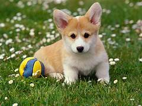
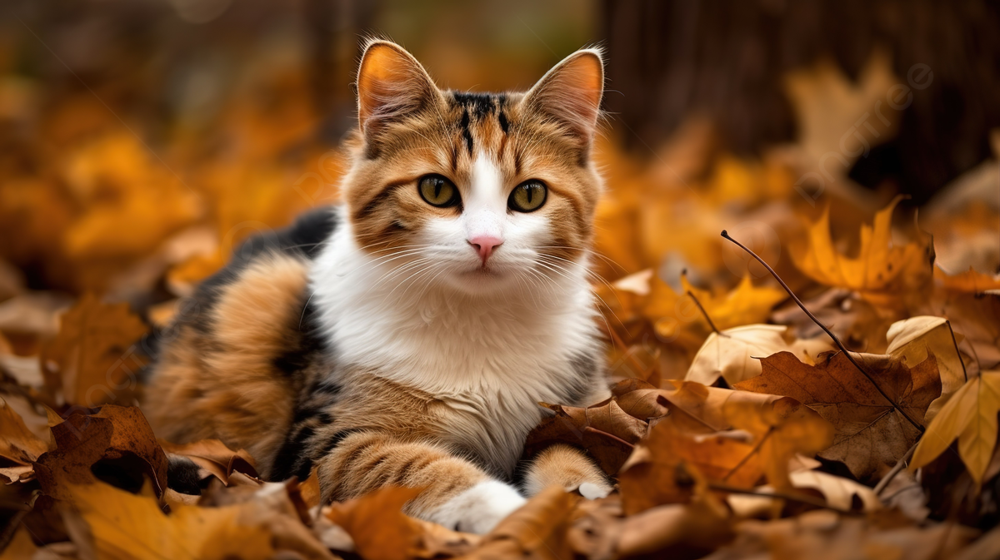
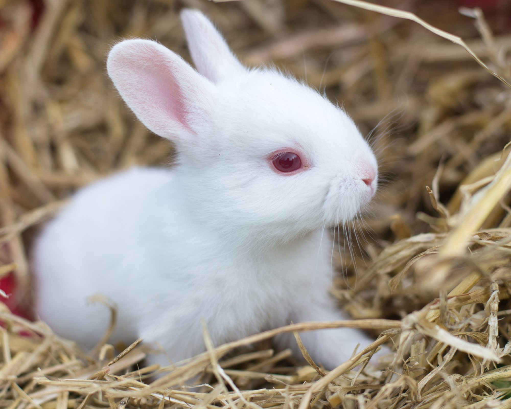

Please adopt me.

tom
His name is Tom. Tom is a lovable and playful dog who brings joy to everyone around him.With his wagging tail and friendly demeanor,Tom is a beloved companion.
- Personality of Tom:
- Tom is always eager to meet people and make friends.
- Tom loves to play fetch and run around in the park.
- Tom is fiercely loyal to his family and will always be there to provide comfort and support.
- Favorite Activity:
- Tom's favorite game is playing fetch with his favorite ball.
- Tom loves to going on longwalks with his owner and exploring new places.
- Tom is a big cddlebug and loves to snuggle up with his favorite humans.
- Quirks
- Tom's tail wags excitedly whenever he sees his favorite toys or treats.
- Tom loves to snore loudly when he's sleeping, which always makes everyone laugh.

Jerry
Jerry is a stunning feline with a fluffy coat and captivating green eyes. This charming cat loves to lounge around the house, napping in the sunbeams that stream through the windows.
- Personality:
- Jerry adores being petted and will often rub against legs for attention.
- Despite his laid-back nature, Jerry enjoys chasing toys and playing with strings
- Jerry values his alone time and can often be found exploring the house or watching birds outside the window.
- Favorite Things:
- Jerry goes crazy for catnip and will roll around in ecstasy when given a whiff.
- Jerry can't get enough of belly rubs and will expose his soft belly for pets.
- Jerry loves snuggling up in cozy spots like blankets or soft cushions.
- Quirks:
- Jerry kneads with his paws when he's feeling relaxed or happy.
- Jerry has a range of meows to communicate his needs, from hunger to attention-seeking.
- Jerry's tail twitches when he's excited or curious about something.

Benny
Benny is an adorable white baby rabbit with a fluffy coat and bright, curious eyes. He's a bundle of energy, always hopping around and exploring his surroundings.
- Personality Traits:
- Benny loves to play with toys and run around in circles, showing off his energetic personality.
- Benny is always sniffing and investigating new sights and smells, eager to learn about his environment.
- Benny loves to snuggle up in cozy spots and enjoy gentle pets and cuddles.
- Favorite Activities:
- Benny enjoys hopping around and playing games that involve movement and fun.
- Benny loves to nibble on fresh veggies and hay, enjoying the taste and texture.
- Benny enjoys being close to his favorite humans and will often seek out cuddles and pets.
- Quirks:
- Benny can move quickly and suddenly, darting from one spot to another with his speedy little legs.
- Benny may give gentle nips or nibbles when playing, showing his natural rabbit behavior.
- Benny has adorable facial expressions that melt hearts with his big, round eyes and twitching nose.